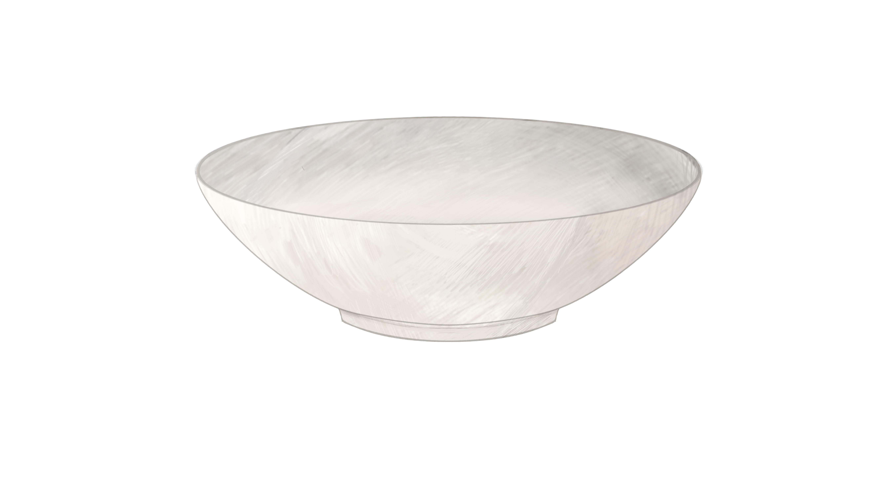

1624


1662
1683

1895
1945 -
拾
遺
陶瓷紋樣視覺化
Turn the knob to scroll
1624
1662
1683
1895
1945 -
PLAYGROUND controlled by the ceramic object on the desktop
KEEP SCROLLING FOR THE NEXT PAGE
陶瓷與臺灣
17世紀
植物紋
動物紋
符號紋
山水紋
圖騰紋
和風紋
回看過去四百年
台灣經過四個殖民時期，各時期的文化體現在陶瓷上。
不同時期的紋樣，反映了當時社會生活與審美風格，
這些紋樣寓意深刻，承載當時人們對生活的寄託，
展現當時的思想與價值觀，記錄下了時代變遷與文化融合。
紋 樣 寓 意


The Process it works
01.土的形成
02.形的創造
03.裝飾圖樣
04.土的外衣
05.火的塑造


A History Of Taiwan Ceramic Patterns